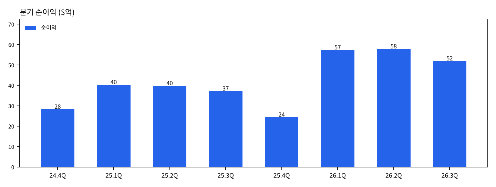
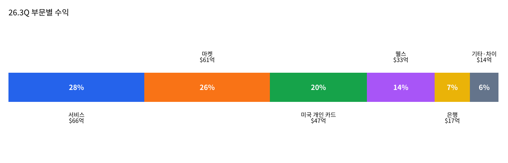
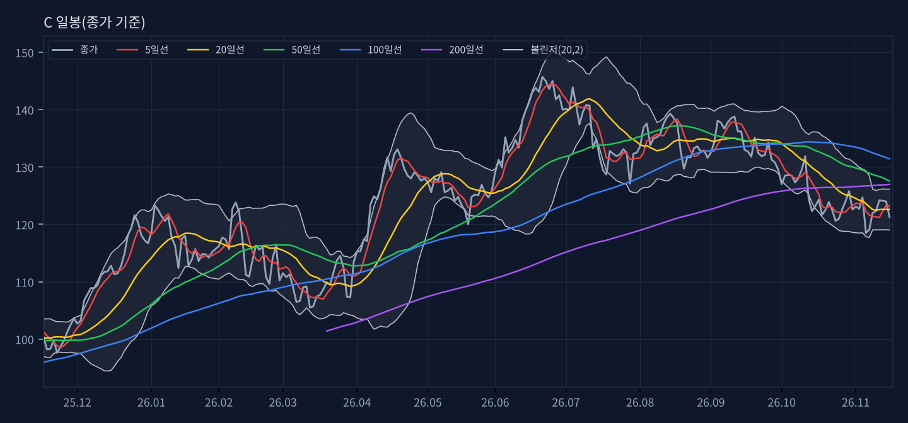
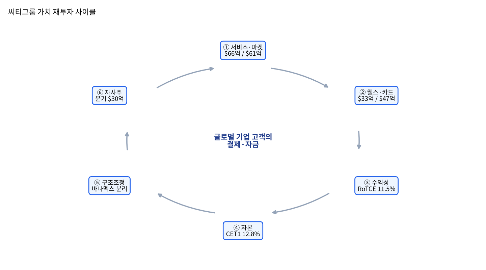

씨티그룹은 100여 개국에서 영업하는 미국의 글로벌 은행이다. 기업 자금 결제·수탁을 하는 서비스, 트레이딩 마켓, 자산관리 웰스, 투자은행 은행, 미국 개인 카드가 핵심이다. 최근에는 멕시코 자회사 바나멕스를 분리하고 부문을 단순화하는 구조조정이 진행 중이다.
| 항목 | 내용 |
|---|---|
| 종목 | Citigroup Inc. (C) · NYSE · 본사 뉴욕 |
| 밸류에이션 | PER 11.8배 · P/TBV 1.19배 (2026.11.16 종가 $121.32) |
| 최근 분기(26.3Q) | 순수익 $238억, 순이익 $52억, EPS $2.85, RoTCE 11.5% |
| 자본 | CET1 12.8%, 주당 유형장부가 $101.59, 효율비율 58.5% |
| 사업 부문 | 서비스, 마켓, 웰스, 은행, 미국 개인 카드 |
| 직책 | 인물 | 역할·특징 |
|---|---|---|
| CEO | 제인 프레이저 | 구조조정·바나멕스 분리·부문 단순화를 이끄는 경영자 |
| CFO | 곤살로 루체티 | 실적·가이던스 발표 담당 |
경영 스타일: 단순화와 수익성 개선. 낮은 수익성(RoTCE 11.5%)을 올리려고 비핵심 사업을 정리하고 서비스·웰스·카드에 집중한다. 자사주는 $300억 프로그램으로 3분기 $30억을 매입했다. 바나멕스는 2027년 초 연결에서 제외할 계획이며 누적 환산손실(CTA) 약 $90억이 반영될 전망이다(회사 설명, 확인 필요).
100여 개국 기업 고객의 결제·자금 이동을 처리하는 서비스 부문이 순이익 $26억으로 가장 크다.
서비스·마켓·웰스에 집중하고 비핵심 사업은 정리해 수익성을 끌어올린다.
다음 실적발표는 세 가지 질문에 답하는 자리다.
1. 서비스·웰스가 마켓 변동을 메우나?
2. 바나멕스 분리가 계획대로 가나?
3. 수익성(RoTCE 11.5%)이 올라가나?
한 줄 판정 규칙: 첫 번째 질문(서비스·웰스가 마켓 변동을 메우는지)이 가장 약한 고리다. 4분기 마켓 가이던스(-20%)가 시험 지점이다.
일정: 다음 실적발표는 트레이딩뷰 추정 2027.01.14(회사 확정 일정은 확인 필요).
| 분기 | 순수익 | 순이익 | EPS | 조정 EPS | 특이 사항 |
|---|---|---|---|---|---|
| 24.4Q | 확인 필요 | $28억 | $1.34 | – | |
| 25.1Q | 확인 필요 | $40억 | $1.96 | – | |
| 25.2Q | 확인 필요 | $40억 | $1.96 | – | |
| 25.3Q | 확인 필요 | $37억 | $1.86 | – | 바나멕스 관련 손상 기저(트레이딩뷰 PEG 왜곡 원인) |
| 25.4Q | 확인 필요 | $24억 | $1.19 | – | EPS $1.19로 최저(원인 확인 필요) |
| 26.1Q | 확인 필요 | $57억 | $3.06 | – | |
| 26.2Q | 확인 필요 | $58억 | $3.15 | – | |
| 26.3Q | $238억 | $52억 | $2.85 | – | 순수익 $238억(+8%), RoTCE 11.5%, CET1 12.8% |
순이익은 트레이딩뷰 분기 순이익이다. SEC XBRL 분기 데이터가 2025년 말까지만 제공돼 분기 매출은 26.3Q($238억)만 적고 나머지는 확인 필요로 뒀다. EPS는 희석 GAAP 기준이다. 조정 EPS는 씨티가 따로 발표하지 않아 –이다(트레이딩뷰 Reported = GAAP).

흐름 요약: 순이익은 24.4Q $28억에서 26.1Q $57억, 26.2Q $58억, 26.3Q $52억으로 두 배 가까이 늘었다. 25.4Q는 EPS $1.19로 낮았지만 이후 EPS $3.06 → $3.15 → $2.85로 회복됐다.
| 부문 | 돈을 버는 방식 | 26.3Q 수익 | 순이익 |
|---|---|---|---|
| 서비스 | 기업 결제·수탁 | $66억 | $26억 |
| 마켓 | 트레이딩 | $61억 | – |
| 미국 개인 카드 | 카드 대출 | $47억 | $8.5억 |
| 웰스 | 부자 고객 자산관리 | $33억 | $5.9억 |
| 은행 | 투자은행 | $17억 | – |
| 기타·차이 | 합계 $238억과의 차이 | 약 $14억(내 계산) | – |

서비스와 마켓이 수익의 53%를 낸다. 부문별 순이익은 서비스·웰스·미국 카드만 확인됐고 나머지는 이 양식에서 확인하지 못했다.
씨티의 목적은 "글로벌 기업·부자 고객을 위한 단순하고 수익성 높은 은행"이 되는 것이다.
| 축 | 내용 |
|---|---|
| 서비스·마켓 | 글로벌 기업 결제·트레이딩 강화 |
| 웰스 | 자산관리 성장 |
| 구조조정 | 바나멕스 분리, 부문 단순화 |
| 수익성 개선 | RoTCE 11.5%, 효율비율 58.5% |
| 자본 환원 | 자사주 $300억 프로그램 |

| 이동평균 | 값 | 종가 대비 | 위치 |
|---|---|---|---|
| 5일선 | $123.18 | -1.5% | 종가 아래 |
| 20일선 | $122.58 | -1.0% | 종가 아래 |
| 50일선 | $127.53 | -4.9% | 종가 아래 |
| 100일선 | $131.41 | -7.7% | 종가 아래 |
| 200일선 | $126.97 | -4.5% | 종가 아래 |
52주 고가 $148.0에서 내려와 최근 55일은 $117.1~141.3 범위다. 종가 $121.32는 55일 저가($117.1) 위 3.6%, 200일선($127.0) 아래 4.5%다.
| 규칙 | 기준 | 현재 값 | 신호 |
|---|---|---|---|
| 장기 추세 필터 | 종가 vs 200일선 | $121.30 < $126.97 | 매도 |
| 중장기 교차 | 50일선 vs 200일선 | $127.53 > $126.97 | 매수 |
| 단기 교차 | 20일선 vs 50일선 | $122.58 < $127.53 | 매도 |
| 돈키언 채널 | 55일 고가 $141.30 / 저가 $117.10 | 중간값 $129.20 아래 | 매도 |
| 1개월 모멘텀 | 21거래일 수익률 | -2.4% (기준 $124.30) | 매도 |
| 3개월 모멘텀 | 63거래일 수익률 | -11.9% (기준 $137.70) | 매도 |
| 6개월 모멘텀 | 126거래일 수익률 | -0.9% (기준 $122.40) | 매도 |
| 12개월 모멘텀 | 252거래일 수익률 | +20.5% (기준 $100.70) | 매수 |
| 종합 (8개 평균) | -0.50 | 매도 우위 |
해석: 매수 신호 2개(중장기 교차, 12개월 모멘텀), 매도 신호 6개(장기 추세 필터, 단기 교차, 돈키언 채널, 1개월 모멘텀, 3개월 모멘텀, 6개월 모멘텀). 합계 -0.50이다. 14일 ATR $3.60 (3.0%), 52주 고가 $148.00 · 저가 $95.80.
| 가격 | 기준 | 무엇이 바뀌나 |
|---|---|---|
| $141.30 | 55일 고가 | 돌파 시 채널 상단 갱신 |
| $137.70 | 3개월 모멘텀 기준가 | 종가가 이 가격 위면 3개월 신호 매수 |
| $129.20 | 돈키언 중간값 | 55일 채널 중간값 위/아래로 신호가 바뀜 |
| $126.97 | 200일선 | 종가가 이 선 위/아래인지로 장기 추세 신호가 바뀜 |
| $124.30 | 1개월 모멘텀 기준가 | 종가가 이 가격 위면 1개월 신호 매수 |
| $122.40 | 6개월 모멘텀 기준가 | 종가가 이 가격 위면 6개월 신호 매수 |
| $117.10 | 55일 저가 | 이탈 시 채널 하단 갱신 |
| $100.70 | 12개월 모멘텀 기준가 | 종가가 이 가격 위면 12개월 신호 매수 |
가격 수준은 신호가 바뀌는 기준선일 뿐 진입·청산 가격 제안이 아니다. 20일/50일 교차는 이동평균 자체가 움직여 단일 가격으로 표시하지 않았다. 일봉·주봉은 종가 기준 직접 계산(고저 데이터 미사용)이다.
| 악재 요인 | 내용 | 강도 |
|---|---|---|
| 마켓 변동성 | 4분기 마켓 수익 약 -20% 가이던스(기준 시점 확인 필요) | 중간 |
| 바나멕스 분리 | 누적 환산손실 약 $90억, 2027년 초 연결 제외 예정 | 중간 |
| 낮은 수익성 | RoTCE 11.5%, 효율비율 58.5% | 중간 |
| 규제·소송 | 규제 요구사항 이행 과정(구체 수치는 확인 필요) | 참고 |
| 티커 | 회사 | PER(TTM) | PEG | P/S | EPS 성장(YoY) |
|---|---|---|---|---|---|
| C | 씨티그룹 | 11.8배 | 0.27 | 1.91배 | +44% |
| JPM | JP모건체이스 | 14.2배 | 0.80 | 4.56배 | +18% |
| BAC | 뱅크오브아메리카 | 11.9배 | 0.84 | 3.00배 | +14% |
| WFC | 웰스파고 | 12.0배 | 0.72 | 2.99배 | +17% |
| GS | 골드만삭스 | 12.8배 | 0.32 | 3.89배 | +41% |
| MS | 모건스탠리 | 14.7배 | 0.51 | 3.73배 | +29% |
비교 결론: 씨티의 PER 11.8배는 대형은행 평균(약 12~15배)보다 낮고, P/S 1.91배는 가장 낮다. EPS 성장(+44%)은 바나멕스 손상 기저로 부풀려진 값이어서 PEG 0.27은 낮게 나온다. JPM(PEG 0.80)·BAC(0.84)보다 낮은 이유다.
씨티는 적자 기업이 아니다(최근 4분기 순이익 약 $191억). 자본비율과 장부가 대비 가격으로 본다.
| 지표 | 값 | 의미 |
|---|---|---|
| CET1 | 12.8% | 손실 흡수력 |
| RoTCE | 11.5% | 유형자기자본이익률 |
| 주당 유형장부가 · P/TBV | $101.59 · 1.19배 | $121.32 ÷ $101.59 |
| 효율비율 | 58.5% | 비용 효율 |
| 자사주 프로그램 | $300억(3분기 $30억) | 분기 환원 |
| 기준 | 매출 | P/S | 비고 |
|---|---|---|---|
| 트레이딩뷰 | – | 1.91배 | 매출 기준 |
| 대형 상업은행(JPM·BAC·WFC) | – | 약 3.52배 | 4.56 / 3.00 / 2.99 |
| 투자은행(GS·MS) | – | 약 3.81배 | 3.89 / 3.73 |
해석: 씨티의 P/S·P/TBV는 대형은행 중 가장 낮다. RoTCE 11.5%가 피어보다 낮은 만큼 할인된 가격이다. RoTCE가 오르면 P/TBV 1.19배가 올라갈 여지가 있다(내 해석).
은행은 EBITDA 대신 충당금 전 영업이익(PPNR)을 쓴다. 분기 SEC 데이터가 없어 3분기만 추정했다.
| 지표 | 값 | 산출 |
|---|---|---|
| 26.3Q 순수익 | $238억 | 회사 발표 |
| 효율비율 | 58.5% | 비용 ÷ 순수익 |
| PPNR (26.3Q 추정) | 약 $99억 — 흑자 | $238억 × (1 − 0.585) (내 계산) |
| 순이익 (TTM) | 약 $191억 | 트레이딩뷰 4분기 합 |
| 방식 | PER | EPS 성장률 | PEG | 판정 |
|---|---|---|---|---|
| 조정 추정 (바나멕스 기저 제외, 성장 약 36% 가정) | 11.8배 | 약 +36% (내 추정) | 약 0.33 | 적극 매수 |
| 트레이딩뷰 (GAAP TTM $10.26) | 11.8배 | +44.2% | 0.27 | 적극 매수 |
판정: 트레이딩뷰 PEG 0.27, 조정 추정 약 0.33 → 모두 적극 매수 구간. 25.3Q 바나멕스 관련 손상으로 직전 4분기 EPS가 낮아져 성장률이 +44%로 부풀려졌다. 이를 제외한 성장을 약 36%로 가정하면 PEG는 약 0.33이다(내 가정·추정, 분기별 조정 EPS 미확인).

씨티 사이클은 서비스·마켓 수익 → 수익성 → 자본 → 재투자로 돈다.
| 고리 | 현재 숫자 | 고리 강도 | 약해지는 신호 |
|---|---|---|---|
| ① 서비스·마켓 | 서비스 $66억, 마켓 $61억 | 진행 중 | 마켓 -20% 가이던스 |
| ② 웰스·카드 | 웰스 $33억, 카드 $47억 | 강함 | 신용·시장 둔화 |
| ③ 수익성 | RoTCE 11.5% | 약함 | 효율비율 정체 |
| ④ 자본 | CET1 12.8% | 강함 | CET1 하락 |
| ⑤ 구조조정 | 바나멕스 분리, 부문 단순화 | 진행 중 | 지연·손실 확대 |
| ⑥ 자사주 | 분기 $30억 | 강함 | 환원 축소 |
사이클의 특징: 약한 고리는 ③ 수익성이다. 자본은 충분한데 수익률이 낮아 구조조정으로 끌어올려야 한다.